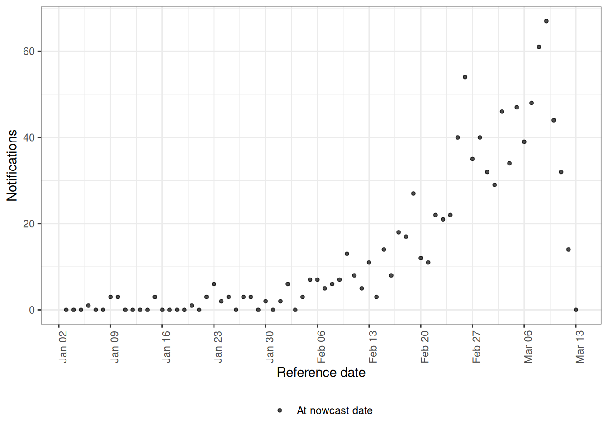
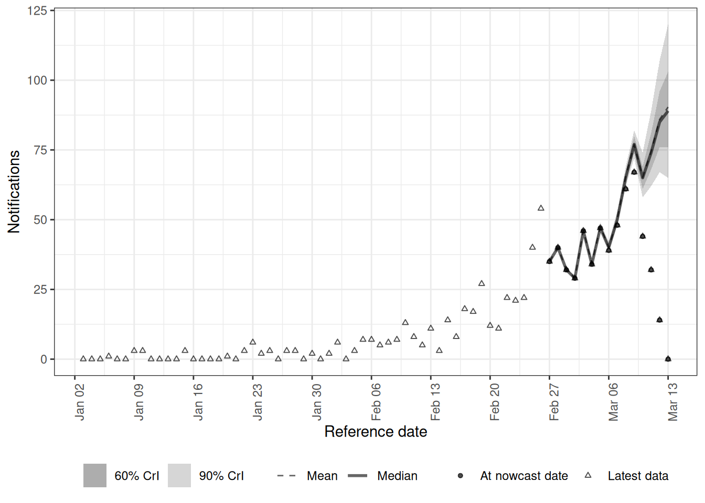
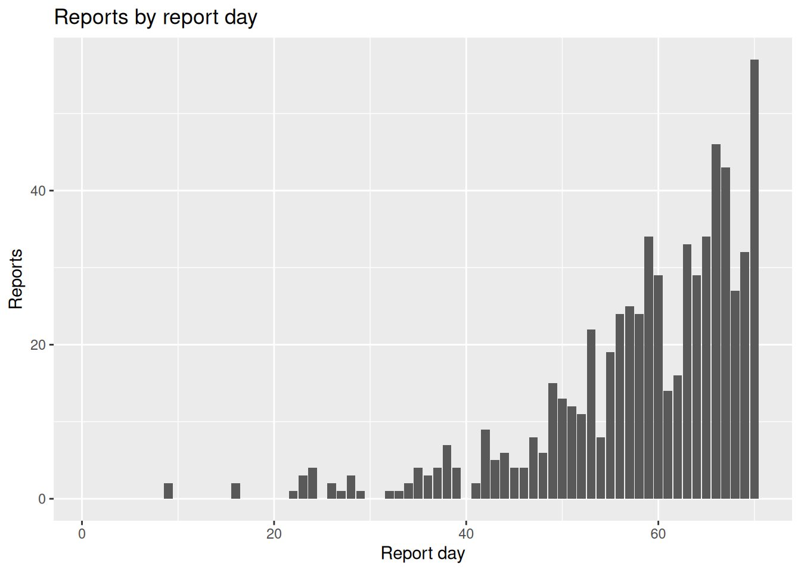
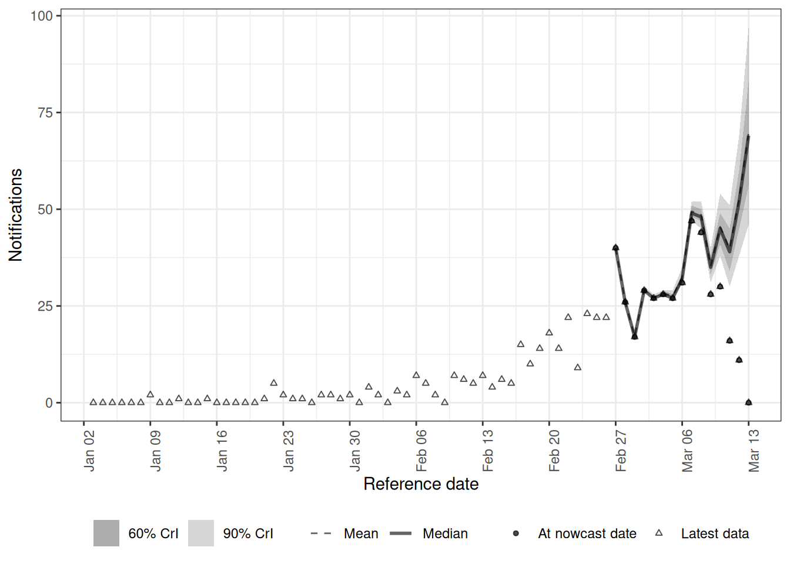
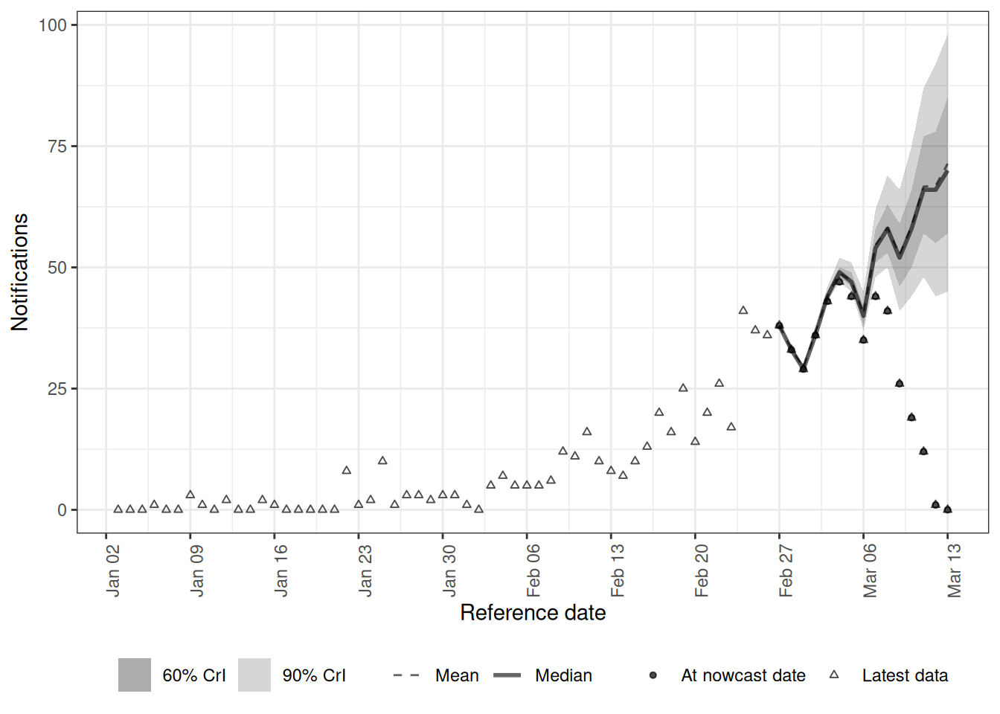
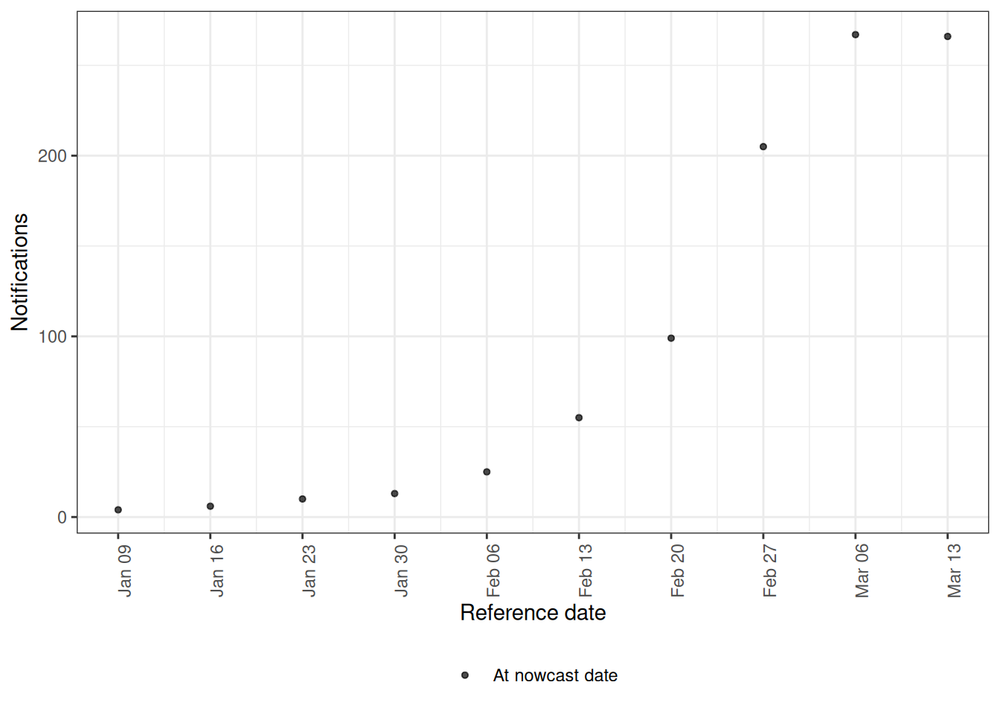
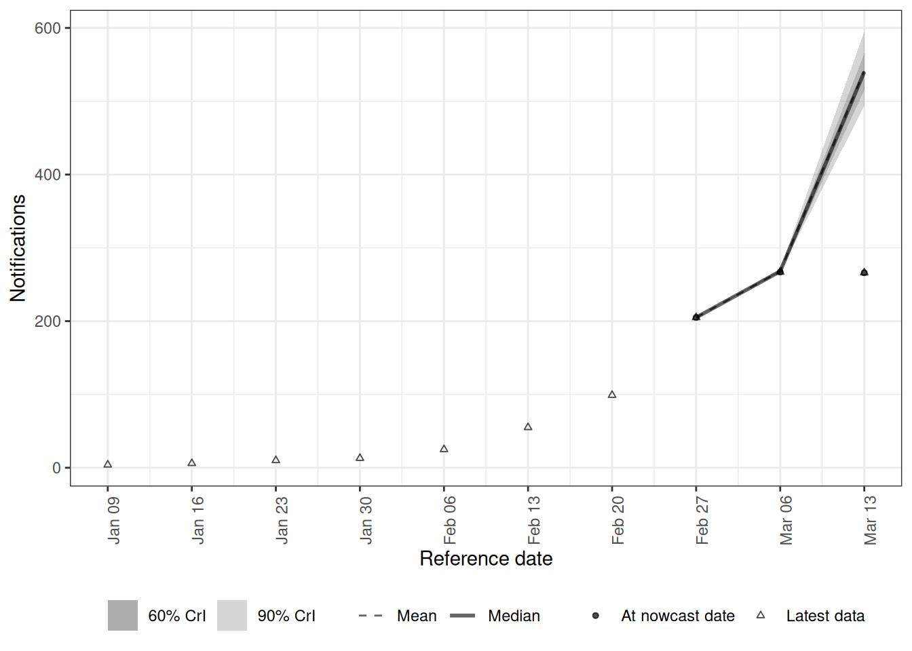

library("nfidd.nowcasting")
library("dplyr")
library("tidyr")
library("ggplot2")
library("epinowcast")
library("data.table")Modelling complex reporting processes
Introduction
In the joint nowcasting session we built a nowcasting model in Stan that jointly estimated the delay distribution and the nowcast from the reporting triangle, and then added a renewal process so transmission informed the nowcast. That model assumed a single delay distribution, the same on every day.
Bespoke models like that are ideal for learning how nowcasting works, and they remain a reasonable choice for real analyses when you understand the reporting process well. But routine surveillance data is usually messier: the reporting process itself can be complicated in ways a single fixed delay cannot capture. In this session we introduce epinowcast (Sam Abbott et al. 2024), one flexible framework for these situations. We reproduce the joint nowcasting model in epinowcast, then extend it to handle reporting complications the bespoke model cannot: a day-of-week reporting effect, a delay that drifts over time, and weekly (batched) reporting. Throughout we simulate data with the feature, fit a model that handles it, and look at the result.
Slides
Objectives
This session shows why real reporting processes are harder to model than a single fixed delay assumes, reproduces the joint nowcasting model in epinowcast, and extends it to complex reporting features through worked examples.
NoteSetup
Source file
The source file of this session is located at sessions/complex-reporting-processes.qmd.
Libraries used
In this session we will use the nfidd.nowcasting package to load infection times and the simulation helpers we have used throughout, the dplyr and tidyr packages for data wrangling, and the ggplot2 library for plotting. The worked examples additionally use the epinowcast package and the data.table package that it uses for its data structures.
Tip
This session uses the development version of epinowcast from GitHub, as some of the data and preprocessing helpers used here are newer than the latest CRAN release. You can install it together with cmdstanr with:
install.packages(
"cmdstanr",
repos = c("https://stan-dev.r-universe.dev", getOption("repos"))
)
remotes::install_github("epinowcast/epinowcast")epinowcast compiles its models with cmdstanr the first time a model is fitted, which needs a working CmdStan toolchain (the same one used elsewhere in this course). Full installation and setup instructions, including how to install CmdStan, are on the package website. The fits in this session use the course-standard sampler settings but short, simulated data so the course builds in reasonable time.
Initialisation
We set a random seed for reproducibility. We also tell epinowcast not to warn about partially specified initial conditions, which keeps the output tidy.
set.seed(123)
options(cmdstanr_warn_inits = FALSE)Why real reporting is harder than our models assume
Recall the joint nowcasting model: we modelled each cell of the reporting triangle as
\[ n_{t,d} \mid \lambda_{t}, p_{t,d} \sim \text{Poisson}\left(\lambda_{t} \times p_{t,d}\right), \]
where \(\lambda_{t}\) is the expected number of onsets on day \(t\) and \(p_{t,d}\) is the probability that an onset on day \(t\) is reported with a delay of \(d\) days. We gave \(\lambda_{t}\) a daily geometric random walk (or a renewal process) and \(p_{t,d}\) a single delay distribution, the same on every day.
That worked in our simulated examples because we simulated from almost exactly that model. Real data rarely cooperate so neatly. Routine surveillance data often shows features a single fixed delay does not capture: day-of-week reporting effects, reporting delays that vary over time or by strata such as age or region, weekly or batched reporting, and missing or late reports. Rather than list these and tell you they are hard, we show several: simulate the feature, fit a model that handles it, and look at the result.
NoteTake 5 minutes
Think about the joint nowcasting model you built. What would you have to change in that Stan code to add a day-of-week reporting effect and let the delay distribution change over the course of the outbreak?
NoteSolution
There is no single right answer, but the concrete changes add up quickly.
- A day-of-week reporting effect. The reporting probability would have to depend on the calendar day the report lands on, not just the delay \(d\). In practice you would turn the delay vector into a matrix indexed by reference date and delay, \(p_{t,d}\), and multiply each cell by a day-of-week factor \(w_{(t+d)\,\bmod\,7}\) keyed on the report date \(t+d\). That means seven new parameters (a
simplexor sum-to-zero vector for identifiability) and an extra loop over cells intransformed parameters. - A time-varying delay. You would put a random walk on the parameters of the delay distribution, for example
meanlog[t] = meanlog[t-1] + sigma * eta[t](and similarly forsdlog), each with its own prior, then recompute the delay PMF for every reference date \(t\) rather than once. That is a new vector of innovationseta, a new standard-deviation parametersigmawith a prior, and a per-date PMF calculation. - Keeping it a valid distribution. The probabilities for each reference date must still sum to one over delays after both changes, so you would re-impose the per-date normalisation (a simplex or an explicit renormalisation) every day instead of reusing one shared, pre-normalised vector.
- The cost. Each addition means more parameters, a larger
transformed parametersblock, slower gradient evaluations, and more code to unit-test, all before you have fitted anything.
None of this is impossible, and writing it yourself remains a reasonable option. But it is the point at which reaching for a general framework that already implements these features lets us focus on the modelling choices rather than the implementation.
Introducing epinowcast
epinowcast (Sam Abbott et al. 2024) is a Bayesian framework for real-time infectious disease surveillance. It is one of several tools for this kind of modelling (we point to others at the end of the session), and it is a direct generalisation of the joint nowcasting model we built: it works from the reporting triangle and jointly estimates the expected counts and the reporting process, but it makes each component far more flexible and exposes them through a formula interface rather than hand-written Stan code.
epinowcast decomposes the problem into modular pieces, each of which mirrors something we have already seen.
- An expectation model for the expected counts \(\lambda_{t}\) (the analogue of our geometric random walk or renewal process).
- A reference date model for the delay distribution by date of the epidemiological event (the analogue of our \(p_{t,d}\), but allowed to vary over time and by covariates).
- A report date model for effects that act on the report date, such as day-of-week reporting effects.
- An observation model for the likelihood linking expected to observed counts (the analogue of our Poisson likelihood for \(n_{t,d}\)).
Each piece is specified with an R formula, so adding a day-of-week effect or a time-varying delay is a one-line change rather than a rewrite of the model. Internally, epinowcast still builds and fits a Stan model.
Tip
We are treating epinowcast as a tool here rather than dissecting its internals. The mapping back to the bespoke model is deliberate: if you understand the joint nowcasting session, you already understand what epinowcast is doing, just with more flexible components.
The course model, in epinowcast
Before adding anything new, let us reproduce the joint nowcasting model we already built, but in epinowcast. We simulate exactly as in the joint nowcasting session: the same onset time series, the same fixed reporting delay, and the same reporting triangle.
gen_time_pmf <- make_gen_time_pmf()
ip_pmf <- make_ip_pmf()
onset_df <- simulate_onsets(
make_daily_infections(infection_times), ip_pmf
)
cutoff <- 71
reporting_delay_pmf <- censored_delay_pmf(
rlnorm, max = 15, meanlog = 1, sdlog = 0.5
)
reporting_triangle <- onset_df |>
filter(day < cutoff) |>
mutate(
reporting_delay = list(
tibble(d = 0:15, reporting_delay = reporting_delay_pmf)
)
) |>
unnest(reporting_delay) |>
mutate(
reported_day = day + d,
reported_onsets = rpois(n(), onsets * reporting_delay)
)Putting the data into epinowcast format
epinowcast expects data in a “long” format with one row per (reference date, report date) pair, where confirm is the cumulative count for that reference date as known on that report date. This is the same reporting triangle we have been using, just with calendar dates instead of integer days and cumulative rather than incremental counts.
We attach arbitrary calendar dates (so that, later, weekends line up with a day-of-week effect) and let epinowcast’s own enw_add_cumulative() form the cumulative counts from the incident new_confirm column, rather than computing the cumulative sum by hand. Because we reuse this transformation in each example below, we wrap it in a small helper.
# Day 0 of the simulation is a Monday
ref_date0 <- as.Date("2023-01-02")
to_enw_format <- function(triangle) {
triangle |>
filter(reported_day <= max(day)) |>
transmute(
reference_date = ref_date0 + day,
report_date = ref_date0 + reported_day,
new_confirm = reported_onsets
) |>
arrange(reference_date, report_date) |>
as.data.table() |>
enw_add_cumulative()
}
enw_long <- to_enw_format(reporting_triangle)
head(enw_long)Key: <reference_date, report_date>
reference_date report_date new_confirm confirm
<IDat> <IDat> <int> <int>
1: 2023-01-03 2023-01-03 0 0
2: 2023-01-03 2023-01-04 0 0
3: 2023-01-03 2023-01-05 0 0
4: 2023-01-03 2023-01-06 0 0
5: 2023-01-03 2023-01-07 0 0
6: 2023-01-03 2023-01-08 0 0
NoteTake 2 minutes
How does this data structure relate to the reporting triangle from the joint nowcasting session?
NoteSolution
It is the same idea in a different layout. Each reference_date is a row of the triangle, each report_date gives a column, new_confirm is the cell count \(n_{t,d}\), and confirm is its cumulative version over delays. epinowcast works with the cumulative confirm and converts it back into the reporting triangle internally during preprocessing.
Preprocessing and fitting
epinowcast preprocesses the data into its internal reporting-triangle representation, where we also choose the maximum delay we will model.
pobs <- enw_preprocess_data(enw_long, max_delay = 15)The preprocessed object has its own plot() method, which shows the reporting triangle we are about to model: each line is a reference date, and the cumulative count climbs as later reports arrive.
plot(pobs)
Now we specify the model. We define each module explicitly so the mapping back to the bespoke model is visible: a daily random walk for the expected counts (matching the daily geometric random walk we built), a single constant delay distribution, and a Poisson observation model.
# Expected counts lambda_t: a daily random walk (cf. our geometric random walk)
expectation_module <- enw_expectation(~ rw(day), data = pobs)
# Delay distribution p_{t,d} by reference date: constant over time (cf. fixed p)
reference_module <- enw_reference(~ 1, data = pobs)
# Observation model: Poisson, as in n_{t,d} ~ Poisson(lambda_t * p_{t,d})
obs_module <- enw_obs(family = "poisson", data = pobs)We collect the fitting options once and reuse them across the session. These play the same role as the arguments to nfidd_sample() did in earlier sessions, and we set them to match: four chains run in parallel with 500 warmup and 500 sampling iterations each.
fit_opts <- enw_fit_opts(
save_warmup = FALSE, pp = TRUE,
chains = 4, parallel_chains = 4,
iter_warmup = 500, iter_sampling = 500,
show_messages = FALSE, refresh = 0
)We then fit the model, passing each module explicitly. The first fit compiles the Stan model, so it is the slowest step; subsequent fits in this session reuse the compiled model.
course_nowcast <- epinowcast(
pobs,
expectation = expectation_module,
reference = reference_module,
obs = obs_module,
fit = fit_opts
)
NoteTake 3 minutes
Compare these modules to the choices we made in the joint nowcasting session. Which module corresponds to \(\lambda_{t}\), which to \(p_{t,d}\), and which to the likelihood?
NoteSolution
enw_expectation()plays the role of \(\lambda_{t}\):rw(day)is a daily random walk on the expected counts, like the geometric random walk we used for onsets.enw_reference()plays the role of the delay distribution \(p_{t,d}\):~ 1keeps it constant over time, exactly as in our bespoke model.enw_obs(family = "poisson")plays the role of the likelihood \(n_{t,d} \sim \text{Poisson}(\lambda_{t} p_{t,d})\).
This is the same joint nowcasting model we built by hand, now expressed as a handful of modules. Everything that follows is an extension of one of these modules, or the addition of a report-date module for report-date effects.
Plotting the nowcast
epinowcast objects come with plot() and summary() methods, so we do not have to extract draws by hand as we did with our bespoke fits. To judge the nowcast we want to compare it against what was eventually reported, so we build the latest (most complete) version of the data with enw_latest_data() and pass it to plot() via latest_obs.
latest_obs <- enw_latest_data(to_enw_format(reporting_triangle))
plot(course_nowcast, latest_obs = latest_obs)
As in our bespoke nowcasts, the most recent dates are the most uncertain because they are the least complete: the nowcast (median and credible intervals) fills in the gap up to the eventually-observed counts (the points), which is exactly the right truncation the nowcast corrects for. The plotting methods are much more flexible than this; see the epinowcast plotting documentation for options such as plotting particular reference dates or the posterior predictive fit.
Extending the model: day-of-week effects
Now we add a complication the bespoke model could not handle comfortably. Real data carry two distinct day-of-week patterns, and it helps to keep them separate.
- A reference-date effect: events genuinely happen at different rates by day of week. For onset data, for example, fewer onsets may be recorded at weekends.
- A report-date effect: the reporting system processes reports at different rates by day of week, so fewer reports land at weekends regardless of when the onset occurred.
We build a simulation with both, one step at a time, so it is clear how each effect enters the data. Assume day 0 of the simulation is a Monday, so day of week is day %% 7 (0 = Monday).
We start from the underlying onsets and apply a reference-date day-of-week effect, thinning the expected onsets by a weekly weight on the onset day.
# Multiplicative weekly weights for Mon, Tue, ..., Sun
ref_dow_effect <- c(1, 1, 1, 1, 0.95, 0.7, 0.7) # fewer onsets at weekends
rep_dow_effect <- c(1, 1, 1, 1, 0.9, 0.4, 0.5) # fewer reports at weekends
dow_onsets <- onset_df |>
filter(day < cutoff) |>
mutate(
ref_dow = day %% 7,
onsets = onsets * ref_dow_effect[ref_dow + 1]
)Next we apply the reporting delay to spread each day’s onsets over later report days, exactly as in the course model.
dow_delayed <- dow_onsets |>
mutate(
reporting_delay = list(
tibble(d = 0:15, reporting_delay = reporting_delay_pmf)
)
) |>
unnest(reporting_delay) |>
mutate(reported_day = day + d)Finally we apply a report-date day-of-week effect, thinning by a weekly weight on the report day, and draw the observed counts.
dow_triangle <- dow_delayed |>
mutate(
rep_dow = reported_day %% 7,
rep_weight = rep_dow_effect[rep_dow + 1],
reported_onsets = rpois(n(), onsets * reporting_delay * rep_weight)
)We can see the report-date effect clearly if we sum reports by report day: the totals dip on a regular weekly cycle.
reports_by_day <- dow_triangle |>
filter(reported_day <= max(day)) |>
summarise(reports = sum(reported_onsets), .by = reported_day)
ggplot(reports_by_day, aes(x = reported_day, y = reports)) +
geom_col() +
labs(x = "Report day", y = "Reports", title = "Reports by report day")
The two effects act on different dates. The reference-date effect changes when events happen (the onset day), so it belongs in the model for the expected counts. The report-date effect changes when reports are processed (the report day), so it belongs in a separate report-date module, which our bespoke \(p_{t,d}\) (a function of delay \(d\) alone) had no way to express. epinowcast lets us add both in one model.
These extended models have a slightly harder posterior, so for them we add adapt_delta = 0.95 to the fitting options (just as we did for the harder joint model in the joint nowcasting session).
fit_opts_hard <- enw_fit_opts(
save_warmup = FALSE, pp = TRUE,
chains = 4, parallel_chains = 4,
iter_warmup = 500, iter_sampling = 500,
adapt_delta = 0.95,
show_messages = FALSE, refresh = 0
)dow_pobs <- enw_preprocess_data(to_enw_format(dow_triangle), max_delay = 15)
dow_nowcast <- epinowcast(
dow_pobs,
# Reference-side day-of-week effect on the expected onsets
expectation = enw_expectation(~ rw(day) + day_of_week, data = dow_pobs),
reference = enw_reference(~ 1, data = dow_pobs),
# Report-side day-of-week reporting effect
report = enw_report(~ (1 | day_of_week), data = dow_pobs),
obs = enw_obs(family = "poisson", data = dow_pobs),
fit = fit_opts_hard
)dow_latest <- enw_latest_data(to_enw_format(dow_triangle))
plot(dow_nowcast, latest_obs = dow_latest)
NoteTake 3 minutes
This model carries two day-of-week terms: day_of_week in the expectation module and (1 | day_of_week) in the report module. Why are these different effects, and why was the report-date one awkward to add to the hand-rolled Stan model?
NoteSolution
The two terms act on different dates. day_of_week in enw_expectation() models genuine variation in when events occur by reference (onset) day of week. (1 | day_of_week) in enw_report() is a random effect on the report date, one level per day of the week, scaling how many reports are processed on each calendar day; it absorbs the weekly reporting dip so it does not distort the nowcast of the underlying onsets. In the bespoke model the reporting probabilities depended only on the delay \(d\) and had to sum to one for each reference date, so making them also depend on the calendar day of the report (while staying a valid distribution) meant restructuring the whole delay component. Here each effect is one extra formula on the relevant module.
Extending the model: a time-varying delay
For our second worked example we relax the assumption that the delay distribution is the same on every day. Reporting delays may lengthen when a system is under strain and shorten when it has spare capacity, so a single fixed \(p_{t,d}\) cannot represent a delay that drifts across the outbreak.
We simulate this by letting the mean of the reporting delay grow slowly with the onset day, so later onsets may be reported with longer delays.
tvd_triangle <- onset_df |>
filter(day < cutoff) |>
rowwise() |>
mutate(
reporting_delay = list({
# meanlog drifts upwards over the outbreak: delays may lengthen over time
meanlog_t <- 1 + 0.5 * day / cutoff
tibble(
d = 0:15,
reporting_delay = censored_delay_pmf(
rlnorm, max = 15, meanlog = meanlog_t, sdlog = 0.5
)
)
})
) |>
ungroup() |>
unnest(reporting_delay) |>
mutate(
reported_day = day + d,
reported_onsets = rpois(n(), onsets * reporting_delay)
)This is a property of the reference (onset) date, so we put structure on the reference module rather than on the report module. Where the course model used enw_reference(~ 1, ...) for a constant delay, we now let the delay distribution drift week to week with enw_reference(~ rw(week), ...).
Warning
We simulated a roughly linear drift, so we could fit a model with a matching linear trend on the delay parameters and recover it almost perfectly. That would be cheating: in a real analysis we do not know the functional form of the drift, because we did not generate the data. We therefore deliberately choose a flexible model, a random walk on the delay parameters, that can track a drift without us baking in the exact form we happened to simulate.
tvd_pobs <- enw_preprocess_data(to_enw_format(tvd_triangle), max_delay = 15)
tvd_nowcast <- epinowcast(
tvd_pobs,
expectation = enw_expectation(~ rw(day), data = tvd_pobs),
# Delay distribution now drifts week to week (this is the new part)
reference = enw_reference(~ rw(week), data = tvd_pobs),
obs = enw_obs(family = "poisson", data = tvd_pobs),
fit = fit_opts_hard
)tvd_latest <- enw_latest_data(to_enw_format(tvd_triangle))
plot(tvd_nowcast, latest_obs = tvd_latest)
NoteTake 3 minutes
We changed the delay from enw_reference(~ 1, ...) to enw_reference(~ rw(week), ...). Why does letting the delay vary over time matter for the nowcast, and what would happen if we kept a fixed delay when the true delay was lengthening?
NoteSolution
rw(week) lets the parameters of the delay distribution change from week to week, so the model can learn that recent onsets are being reported more slowly. If we forced a fixed delay when the true delay was lengthening, the model would assume recent dates are more complete than they really are and so would under-nowcast the most recent counts, biasing the picture of the epidemic exactly where it matters most. This is the same flexibility we used for the expectation module, applied to the delay instead.
Extending the model: weekly (batched) reporting
For our third worked example the data are reported less often than they occur. Many surveillance systems release updates weekly rather than daily, so counts arrive in weekly batches even though events happen every day. epinowcast supports this directly through a non-daily timestep, documented for the enw_aggregate_cumulative() converter and the timestep argument of enw_preprocess_data(); we build on that rather than inventing our own scheme.
We reuse the course reporting triangle and aggregate it to a weekly reporting schedule with enw_aggregate_cumulative(), which sums both reference and report dates into weekly steps.
weekly_long <- enw_aggregate_cumulative(enw_long, timestep = "week")
head(weekly_long)Key: <reference_date, report_date>
report_date reference_date new_confirm confirm delay
<IDat> <IDat> <int> <int> <int>
1: 2023-01-09 <NA> 0 0 0
2: 2023-01-16 <NA> 0 0 1
3: 2023-01-23 <NA> 0 0 2
4: 2023-01-30 <NA> 0 0 3
5: 2023-02-06 <NA> 0 0 4
6: 2023-02-13 <NA> 0 0 5We then preprocess with a weekly timestep, so epinowcast knows the reporting schedule is weekly rather than daily. With a weekly timestep the maximum delay is now counted in weeks, so we model up to three weeks of delay.
weekly_pobs <- enw_preprocess_data(
weekly_long, max_delay = 3, timestep = "week"
)
plot(weekly_pobs)
The model is the course model again; only the timestep of the data has changed.
weekly_nowcast <- epinowcast(
weekly_pobs,
expectation = enw_expectation(~ rw(week), data = weekly_pobs),
reference = enw_reference(~ 1, data = weekly_pobs),
obs = enw_obs(family = "poisson", data = weekly_pobs),
fit = fit_opts_hard
)weekly_latest <- enw_latest_data(weekly_long)
plot(weekly_nowcast, latest_obs = weekly_latest)
NoteTake 3 minutes
We did not change the model formulas at all here, only timestep = "week" in preprocessing. Why is the reporting schedule a property of the data rather than of the model, and what would go wrong if we treated weekly data as if it were daily?
NoteSolution
The reporting schedule describes when reports arrive, which is a feature of how the data were collected, so it belongs to the data and its timestep. The same expectation and delay modules apply whether the data are daily or weekly; epinowcast just maps the delay onto the chosen timestep. If we treated weekly batches as daily we would tell the model that almost every day had zero reports with occasional spikes, badly misrepresenting the delay distribution and the completeness of recent data.
Other reporting complications
We have worked through three complications end to end: a day-of-week effect, a time-varying delay, and weekly reporting. Other complications are handled by the same modular idea, each a change to one formula rather than a new model. Two worth knowing about are delays that vary by strata (for example age or region), which add the stratifying variable to a module formula such as enw_reference(~ (1 | age_group), data = pobs) so each stratum has its own delay while borrowing strength across strata, and missing reference dates, which epinowcast models with a dedicated module. We link the relevant documentation for both in Going further below rather than fitting them here.
NoteTake 5 minutes
Suppose you also had the data split by two age groups, and you suspected reporting was slower in one of them. Which module would you change, and what would be the advantage of fitting both age groups in one epinowcast model rather than two separate nowcasts?
NoteSolution
You would add age group to the reference module so the delay distribution can differ by group. Fitting both groups jointly lets a sparse group borrow strength from the other through shared (partially pooled) structure, which is more stable than fitting each group on its own, especially when counts are low.
Going further
This session only scratches the surface of what epinowcast can do, and epinowcast is only one of several tools for this kind of modelling.
epinowcast has extensive documentation and worked case studies that go well beyond this session; rather than try to cover everything here, the best next step is to read them:
- The
epinowcastpackage website (Sam Abbott et al. 2024), including its model description and the getting started vignette.
To go deeper on the topics we covered, the relevant reference pages are:
- Reporting schedule (weekly or batched reporting):
enw_aggregate_cumulative()and thetimestepargument ofenw_preprocess_data(). - Day-of-week and other report-date effects: the
enw_report()report-date module. - Time-varying delay (reference-date effects): the
enw_reference()reference-date module. - Delays that vary by strata: the hierarchical age-stratified nowcasting case study, which fits many reporting triangles at once with partially pooled effects.
- Missing reference dates: the
enw_missing()module. - The plotting reference for more ways to visualise a fit than the default
plot()we used here.
Its case studies and vignettes also work through joint nowcasting with \(R_t\) estimation (a renewal-based expectation model, generalising the joint model from the joint nowcasting session), and evaluation of nowcasts with proper scoring rules (as we did for forecasts in the combining nowcasting and forecasting session).
epinowcast is not the only option, and the right tool depends on the problem.
- The bespoke Stan models we built in this course remain a perfectly good choice when you understand the reporting process and want full control.
- The
baselinenowcastpackage implements simple multiplicative nowcasting methods that make useful benchmarks. - A range of other methods and frameworks are used in practice; the collaborative nowcasting comparison in (Wolffram et al. 2023) surveys several and discusses what drives differences in their performance.
For the methodological background to generative nowcasting models of this kind, see (Lison et al. 2024).
Wrap up
- Review what you’ve learned in this session with the learning objectives
- Share your questions and thoughts
References
Lison, Adrian, Sam Abbott, Jana Huisman, and Tanja Stadler. 2024. “Generative Bayesian Modeling to Nowcast the Effective Reproduction Number from Line List Data with Missing Symptom Onset Dates.” PLOS Computational Biology 20 (4): e1012021. https://doi.org/10.1371/journal.pcbi.1012021.
Sam Abbott, Adrian Lison, Sebastian Funk, et al. 2024. Epinowcast: A Bayesian Framework for Real-time Infectious Disease Surveillance. https://doi.org/10.5281/zenodo.5637165.
Wolffram, Daniel, Sam Abbott, Matthias an der Heiden, et al. 2023. “Collaborative Nowcasting of COVID-19 Hospitalization Incidences in Germany.” PLOS Computational Biology 19 (8): e1011394. https://doi.org/10.1371/journal.pcbi.1011394.